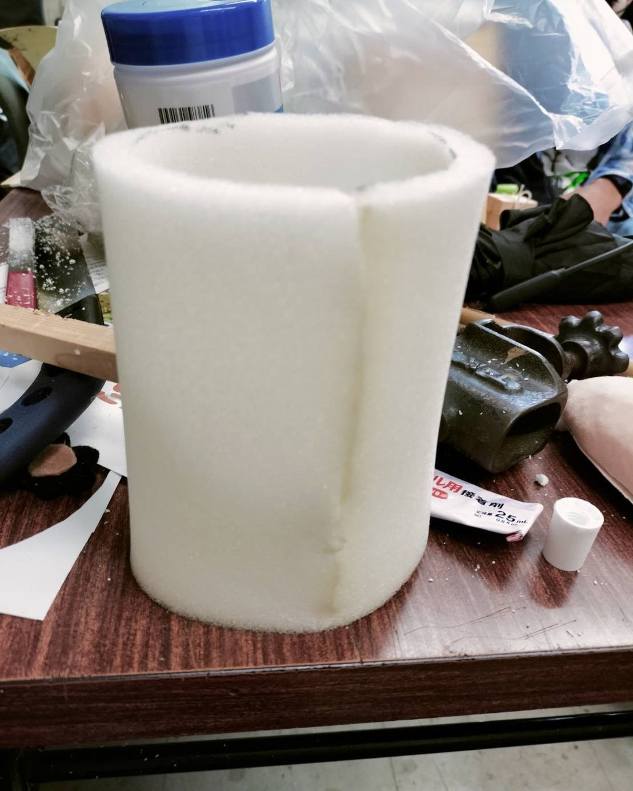

プラスチックの板を切って、三か所に穴をあける


発泡スチロールはマウス型に削る
厚みがありすぎると、肩がごつくなります！


肌色の布を張る。だいたい服に隠れるので、ざっとでOK


プラ板とくっつける
プラ板の端の穴に重なる部分の発泡スチロールはちぎる！！



ウレタンを切ってプラ板をくっつける


ヒノキの棒から関節分を切り落とす

削る部分に印を付け,印部分を軽く切る（切り落とさないように）
印は、頭からはみ出ないくらい。頭の3分の2くらい？


頂点になるところに印を付けてカッターで削る。
おじいちゃんが鉛筆削るイメージで。


木の棒を3～4cm×4本に切る。


印をつけて2箇所切り落とす。


関節二つにプラ板付きゴムが入るように切れ込みを入れ、はめる。


切り込みがない方にはヒートンを付ける。


ゴムで関節同士をくっつける。（ホチキスor釘）


ヒートンと肩部分を針金でつなげる。


正方形に切ったプラ板同士と割りばしを貼り付け、プラ板に穴を開ける。


先を輪っか状にしたピアノ線をボックスの中に入れて針金でとめる。

発砲スチロールで手足を切る、
ボックスをはめる穴を開けるので、手は薄すぎないように注意！


手に穴を二か所開けて、ボックスをはめる。後で腕をくっつける。


 <
<